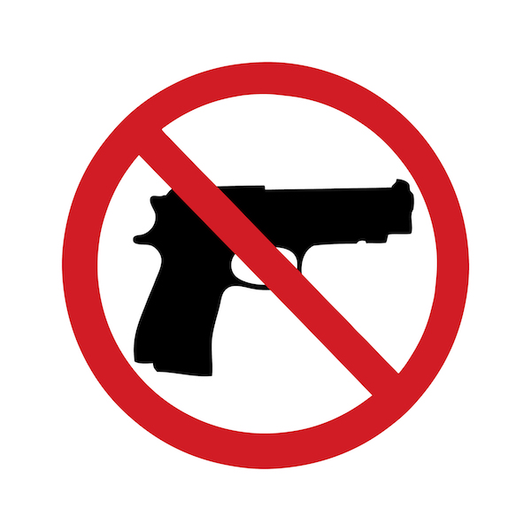

People embrace at the Kilbirnie Mosque in Wellington, New Zealand after 50 people were killed following shooting attacks on mosques in Christchurch on 15 March 2019. The attack is the worst mass shooting in New Zealand's history.
On Saturday, April 27, Daytona Beach police say they saw a man "brandish" a handgun and fire multiple rounds. Four people received non-life-threatening injuries, the release stated. Early Sunday morning, a 16-year-old Daytona Beach boy pulled out a 9mm handgun and opened fire during a fight at a Sanford-area party, Seminole County Sheriff Dennis Lemma said. Ten people were injured, including Houston Texans wide receiver and Daytona Beach native Tank Dell, who was caught in the crossfire between the boy and another shooter.
public domain